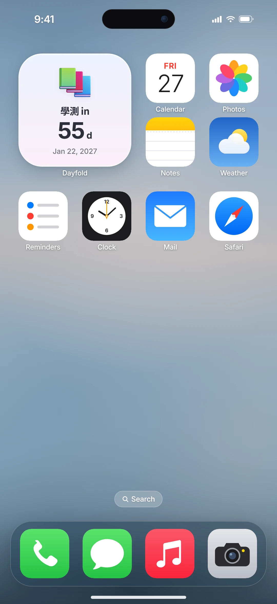

116 學測倒數：放到鎖定畫面
依大學入學考試中心（大考中心）《116 學年度考試簡章》，116 學年度學科能力測驗（學測）考試日期為 2027 年（民國 116 年）1 月 22 日（星期五）至 1 月 24 日（星期日）。iPhone 沒有內建「倒數到指定日期」的小工具。在 Dayfold 建立一個日期為 1 月 22 日的倒數（建議以考試第一天為倒數日），再把它加到鎖定畫面或主畫面，天數會每天自動更新。這不是網頁計算器，也不是讀書計時器；目前也沒有經驗證的「學測主題」。

重點摘要
| 官方考試日期 | 2027 年 1 月 22 日（五）至 1 月 24 日（日） |
|---|---|
| 倒數建議設在 | 第一天 2027 年 1 月 22 日 |
| 來源 | 大學入學考試中心《116 學年度考試簡章》（115 年 8 月 4 日初版）；115 年 8 月 3 日、10 月 23 日新聞稿日期相同。2026 年 11 月 28 日核對時，未見之後改期公告。 |
| 你會看到什麼 | 鎖定畫面或主畫面小工具上的剩餘天數，每天自動更新 |
| 系統需求 | iPhone；Dayfold 需要 iOS 17.0 或以上（鎖定畫面小工具是 iOS 16 起的系統功能） |
| 免費額度 | 可同時保留四個使用中的時刻；Emoji、Flip Calendar、Ticket 三種樣式免費 |
| 不包含 | 讀書計時、科目進度、學測計算器，或經驗證的學測主題 |
116 學測還有幾天？
以下天數都以倒數至 2027 年 1 月 22 日計算，且不含當天（例如 1 月 21 日記為還有 1 天）。這是對照表，不是會自動跳動的網頁計算器；加到鎖定畫面後，小工具會自己更新。
| 從這一天 | 還有幾天到 1 月 22 日 |
|---|---|
| 2026 年 11 月 28 日（六） | 55 天 |
| 2026 年 12 月 1 日（二） | 52 天 |
| 2026 年 12 月 25 日（五） | 28 天 |
| 2027 年 1 月 1 日（五） | 21 天 |
| 2027 年 1 月 15 日（五） | 7 天 |
| 2027 年 1 月 21 日（四） | 1 天 |
日期來自大考中心《116 學年度考試簡章》。115 年 8 月 3 日與 10 月 23 日的新聞稿寫的考試窗口相同。若之後因天災或其他原因另有官方改期，以大考中心最新公告為準。
為什麼用鎖定畫面，而不是網頁計算器
搜「學測倒數」常會找到只顯示一個數字的網頁。關掉分頁，數字就看不到了。日曆通知滑掉之後也會消失。把倒數放在鎖定畫面，每次拿起 iPhone 都能看到還有幾天，不必再打開瀏覽器。
Dayfold 做的就是這件事：一張你命名的日期卡片，可以釘在鎖定畫面或主畫面。它不計時讀書，也不是複習計畫表。
步驟一：在 Dayfold 建立學測倒數
- 從 App Store 下載 Dayfold，打開一次，好讓 iOS 列出它的小工具。Dayfold 需要 iOS 17.0 或以上。
- 打開 Dayfold，點「+」按鈕，進入「記錄時刻」畫面。
- 名稱輸入「學測」。
- 日期選 2027 年 1 月 22 日（考試第一天）。小工具顯示的是到這一天還有幾天，不是逐科開考時間；不必填考試時段。
- （可選）若希望它成為預設小工具，將它設為置頂。當天提醒、30 天和 100 天提醒均可免費使用；通知是選用的，需要你允許。
- 儲存，並選擇卡片樣式。Emoji、Flip Calendar 和 Ticket 可免費使用。

步驟二：放到鎖定畫面
以下是 Apple 官方的鎖定畫面小工具步驟（Apple 支援）：
- 按住鎖定畫面，直到「自訂」按鈕出現，點一下「自訂」。
- 如果出現選項，選鎖定畫面（不是主畫面）。
- 點時間下方的「加入小工具」。
- 在清單裡找到 Dayfold，選圓形或矩形小工具，點一下或拖移到位置上。
- 如果你有好幾個倒數：點一下剛加入的小工具，選「學測」那張卡片（沒選之前會顯示你置頂的卡片）。
- 從小工具清單往下滑關掉，點「完成」。
位置不夠時，先點其他小工具上的「移除」挪出空間。
步驟三（可選）：放到主畫面
同樣來自 Apple 支援：
- 在主畫面按住空白處，直到 App 開始晃動。
- 點左上角「編輯」→「加入小工具」。
- 搜尋 Dayfold，選小或中尺寸，點「加入小工具」。
- 需要的話，按住小工具 →「編輯小工具」，選「學測」那張卡片。
- 點「完成」。
鎖定畫面還是主畫面？
| 鎖定畫面小工具 | 主畫面小工具 | |
|---|---|---|
| 什麼時候看得到 | 每次拿起、點亮手機 | 解鎖回到主畫面時 |
| 系統 | 鎖定畫面小工具是 iOS 16 起的系統功能；使用 Dayfold 需要 iOS 17.0 或以上 | 同上，Dayfold 需要 iOS 17.0 或以上 |
| 尺寸 | 圓形或矩形 | 小或中 |
| 外觀 | 單色，跟著時間字體和桌布配色：天數和日曆圖示 | 全彩卡片 |
| 適合 | 一眼看天數 | 想展示卡片設計 |
很多人兩個都放：鎖定畫面看數字，主畫面放卡片。
小工具沒出現或沒更新？
- 清單裡找不到 Dayfold：先打開 App 一次，關掉再試；還是沒有就重新開機。
- 天數差一天：到「設定」→「一般」→「日期與時間」確認時區正確；打開 App 也會刷新小工具。
- 鎖定時看不到小工具內容：到「設定」→「Face ID 與密碼」（或「Touch ID 與密碼」），檢查「鎖定時允許取用」底下的選項。
- 沒有每秒跳動：正常。iOS 會自己安排小工具的更新時間，天數一天變一次就夠了。
學測結束後呢？
日期過後，Dayfold 會改成正數：卡片在名稱後面顯示「已經」和天數，鎖定畫面小工具顯示「N 天前」。你可以留下，或刪掉再建下一個倒數。它不會自動滾到下一年學測，除非你自己新建那個日期。
也想倒數分科測驗？
步驟相同。依同一份簡章，116 學年度分科測驗考試日期為 2027 年 7 月 10 日（星期六）至 7 月 11 日（星期日）。建議倒數設在第一天 7 月 10 日。免費方案可同時保留四個使用中的時刻，學測和分科測驗可以一起放。
免費與選用的 Pro
Dayfold 可免費下載，不必註冊帳號，內容存在你的 iPhone 上（沒有雲端同步）。四個使用中的時刻和三種卡片樣式免費。Dayfold Pro 是選用的：月繳或一次買斷 Lifetime，可解鎖不限數量的時刻、全部樣式，以及更早的提醒與額外里程碑。
常見問題
116 學測是哪幾天？
依大學入學考試中心《116 學年度考試簡章》（115 年 8 月 4 日初版）及後續新聞稿，116 學年度學科能力測驗考試日期為 2027 年（民國 116 年）1 月 22 日（星期五）至 1 月 24 日（星期日）。若大考中心之後另有改期公告，以最新官方公告為準。
學測倒數應該設在哪一天？
建議設在考試第一天 2027 年 1 月 22 日。學測共三日，至 1 月 24 日結束；小工具顯示的是到你所選日期還有幾天，不是考試日程表。
iPhone 有內建學測倒數嗎？
沒有可以顯示「還有幾天到指定日期」的內建小工具。要在 Dayfold 建立倒數，再加到鎖定畫面或主畫面，天數才會每天自動更新。Dayfold 需要 iOS 17.0 或以上。
這是讀書計時器或學測計算器嗎？
都不是。Dayfold 是倒數日和紀念日小工具，不計時讀書，也不依科目計算剩餘複習時間。
免費可以設幾個倒數？
免費方案可同時保留四個使用中的時刻。若還要倒數分科測驗或其他日期，四個以內都不必付費。Dayfold Pro 可解鎖不限數量的時刻。
Dayfold 有學測主題嗎？
目前沒有經驗證的學測專用主題。把名稱設成「學測」、日期設成考試第一天即可。
學測結束後小工具會怎樣？
日期過後，Dayfold 會改成正數：卡片在名稱後面顯示「已經」和天數，鎖定畫面小工具顯示「N 天前」。你可以留下，或刪掉再建下一個倒數。
分科測驗也能倒數嗎？
可以，步驟相同。依同一份《116 學年度考試簡章》，分科測驗考試日期為 2027 年（民國 116 年）7 月 10 日（星期六）至 7 月 11 日（星期日）。建議倒數設在第一天 7 月 10 日。